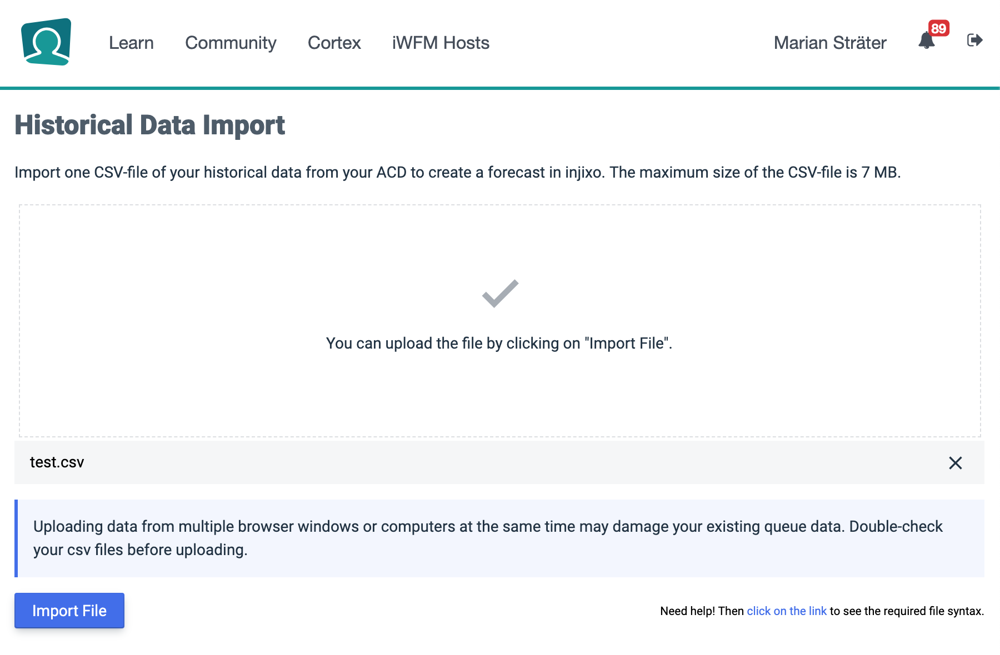
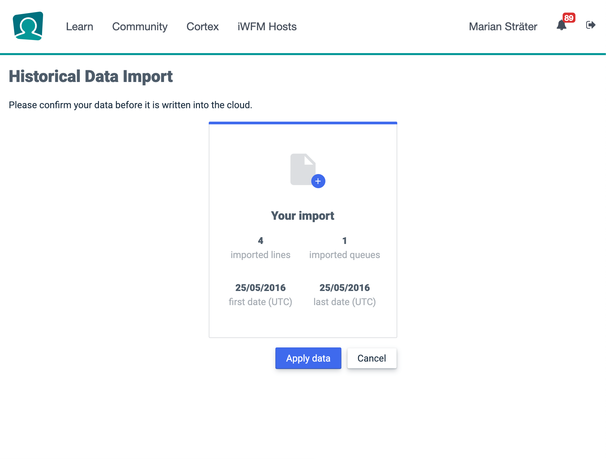
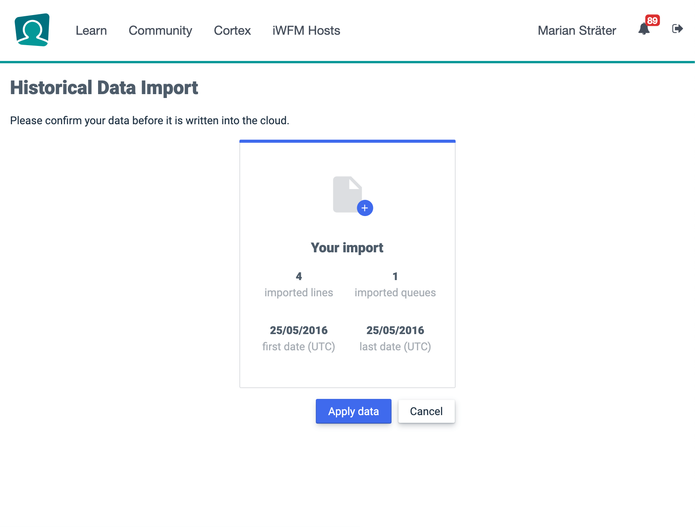

Web and Software design at InVision
In my 3 years of apprenticeship, I worked in many different areas of software development and web design within the company. Here you can see a small overview of my designs, which made it to production
injixo csv-importer UI

Behaviour after file was picked

Discription
Behaviour after file was picked
The goal was to create the possibility for uploading specifically formatted CSVs. Together with a UX Designer, we created a User Journey based on user data we already aggregated. In parallel we had to explore different solutions for uploading files into a specific part of the software. Afterwards we decided to create a paper prototype from the results of the User Journey. One of our co-workers, who worked in the same area as our target-group users tested the prototype and told his opinion about the User Flow. Based on his opinions we started to mock-up several drag and drop uploaders. The main reasons to create a drag and drop uploader, were:
- Simple to understand
- Accessible
- Easy to use
Afterwards we decided to interview some of our customers about the functionality and usability for the first iteration.
The Callcenter School
Designing an interactive 404 Screen

Quick buy button for the webshop